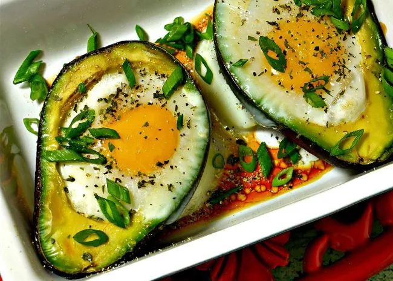

Baked eggs in avocado

Description
Eggs, avocado, and bacon -- that's all you need for a quick, healthy paleo lunch. "The contrast between the soft and fresh avocado and the creaminess of a poached egg is brilliant," says NYJEN. "Good thing it's also very healthy and satisfying."
- 2 small Eggs
- 1 avocado
- 2 tsp chopped chives
- 1 pinch dried parsley
- 1 pinch seasalt and ground black pepper
- 2 slices cooked bacon
]
- preheat oven to 425 F (220C)
- Crack eggs into a bowl, keeping yolks intact
- halve and pit avocado, arranging in baking dish. Gently spoon a yolk into the avocado hole. Continue spooning egg white until full
- season with chives, parsley, sea salt and pepper
- bake for 15 minutes or until egs are cooked
- crumple and sprinkly bacon over avocado